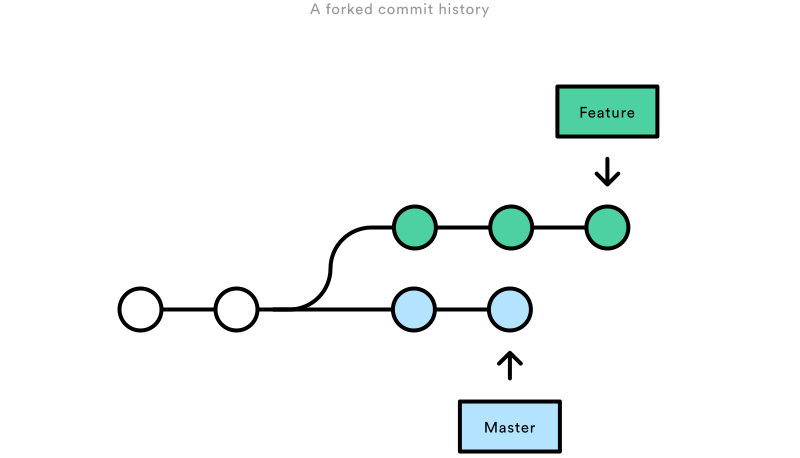
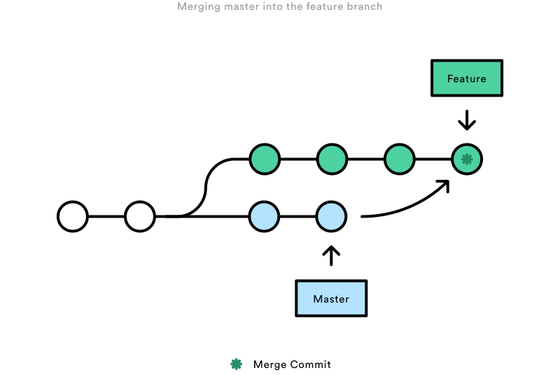
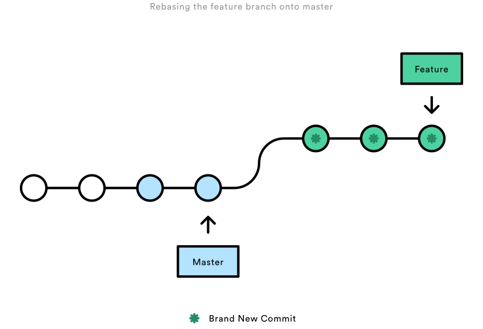
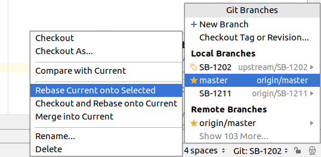

Git rebase vs merge¶
Conceptual Overview¶
The first thing to understand about git rebase is that it solves the same problem as git merge. Both of these commands
are designed to integrate changes from one branch into another branch—they just do it in very different ways.
Consider what happens when you start working on a new feature in a dedicated branch, then another team member updates
the master branch with new commits. This results in a forked history, which should be familiar to anyone who has used
Git as a collaboration tool.

Now, let’s say that the new commits in master are relevant to the feature that you’re working on. To incorporate the
new commits into your feature branch, you have two options: merging or rebasing.
The Merge Option¶
Please avoid using this option!
Please avoid using this option. It creates unnecessary noise in your PRs and makes it extremely hard to
follow your real changes. We have included this information because it will give you better understanding of why we
prefer rebasing over merging.
The easiest option is to merge the master branch into the feature branch using something like the following:
git checkout feature
git merge master
Or, you can condense this to a one-liner:
git merge feature master
This creates a new “merge commit” in the feature branch that ties together the histories of both branches, giving you a branch structure that looks like this:

Merging is nice because it’s a non-destructive operation. The existing branches are not changed in any way. This avoids all of the potential pitfalls of rebasing (discussed below).
On the other hand, this also means that the feature branch will have an extraneous merge commit every time you need to
incorporate upstream changes. If master is very active, this can pollute your feature branch’s history quite a bit.
While it’s possible to mitigate this issue with advanced git log options, it can make it hard for other developers
to understand the history of the project or branch you are working on.
The Rebase Option¶
We prefer this option over merging
As an alternative to merging, you can rebase the feature branch onto master branch using the following commands:
git checkout feature
git rebase master
This moves the entire feature branch to begin on the tip of the master branch, effectively incorporating all of
the new commits in master. But, instead of using a merge commit, rebasing re-writes the project history by
creating brand new commits for each commit in the original branch.

The major benefit of rebasing is that you get a much cleaner project history:
- First, it eliminates the unnecessary merge commits required by
git merge - Second, as you can see in the above diagram, rebasing also results in a perfectly linear project history — you can follow the tip of feature all the way to the beginning of the project without any forks
This makes it easier to navigate your project with commands like git log, git bisect, and gitk.
The Golden rule of Rebasing¶
So, before you run git rebase, always ask yourself, “Is anyone else looking at this branch?”. If the answer is yes,
take your hands off the keyboard and start thinking about a non-destructive way to make your changes.
Otherwise, you’re safe to re-write history as much as you like.
Force-Pushing¶
If you try to push the rebased feature branch back to a remote repository, Git will prevent you from doing so because
it conflicts with the remote feature branch. But, you can force the push to go through by passing the --force flag,
like so:
# Be very careful with this command!
git push --force origin feature
However, before executing this command, please be sure nobody else is working on this branch.
But how do I rebase?¶
Before you start, it is a good idea to backup your current project. If this is your first time doing a rebase, you can
screw things up and loose/damage the work you've already done. So better safe, than sorry. (If you are a pro - what are
you even doing here?  )
)
Syncing your fork first¶
You need to keep your fork's master branch in sync with the upstream/master. This is also required
for rebasing as you will be pointing your feature branch to the HEAD of the forked master branch.
If your fork's master is of sync with the upstream/master and you rebase - it will likely create a mess.
Steps:
- Make sure you are on the
masterbranch (git checkout master) -
Add
upstreamremote which points tohttps://github.com/strongbox/strongbox
1 2 3 4 5 6
$ git remote add upstream git@github.com:strongbox/strongbox.git $ git remote -v origin git@github.com:your-username/strongbox.git (fetch) origin git@github.com:your-username/strongbox.git (push) upstream git@github.com:strongbox/strongbox.git (fetch) upstream git@github.com:strongbox/strongbox.git (push) -
Sync your fork
1 2 3
git fetch upstream git merge upstream/master git push origin master
At this point, your fork should be in sync with the upstream. You can validate that by going to your fork in github.
It should now be saying that master is even with strongbox:master.
Rebasing¶
Idea¶
In most modern IDEs you will have an option to rebase from the IDE. That would be your best option as you will be able to more easily resolve any conflicts which might occur during the rebase.
If you are using Intellij Idea, you need to be at your feature branch and then just Rebase current onto Selected (master):

What this will do is to rebase the SB-1202 feature branch onto the master.
Should there be any conflicts, Idea will give you a pop-up window with a list of the conflicting files/changes
Explanation for the options above:
Accept yours- overwrites the file with your changesAccept theirs- overwrites the file with the remote changes (if the remote file was deleted, it will be deleted on your branch as well)Merge- gives you a window from which you can "merge" the changes as appropriate.
You can also check Idea's manual for Resolving Conflicts
Command line¶
If you are command line lover, you can execute the commands manually:
1 2 | |
However, when conflicts arise, it could be a bit challenging to fix them from your console.
Finally¶
Once you are done rebasing and you have ensured that the code builds as well as the tests are passing, then you will need to force push your branch (remember the Force Pushing section?)
git push --force origin feature-branch
I need help¶
We've all been there. If you are having trouble with your rebase, you can ask for help in your community channel.

License¶
This page has borrowed some of the images and parts of the Atlassian Merging Vs Rebasing article which
are licensed under CC BY 2.5 AU. Head to the Atlassian Merging Vs Rebasing article for a more thorough comparison of merging vs rebasing.